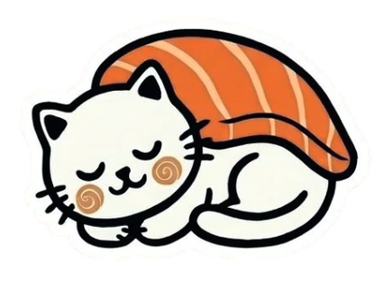

Estas 12 preguntas nos ayudan a entender Tanni Sushi antes de desarrollar su nueva identidad visual. No hay respuestas correctas: cuanto más sinceras y concretas, mejor será el resultado.

12 preguntas en 4 apartadosUnos 15 minutos18 de noviembre de 2026
Podéis responder debajo de cada pregunta, con frases cortas o ejemplos.
Si alguna no tiene respuesta clara todavía, dejadla en blanco y la hablamos en la reunión.
Lo que escribís se queda guardado en este móvil u ordenador aunque cerréis la página. Al terminar, pulsad «Enviar respuestas» abajo del todo y nos llegan directamente.